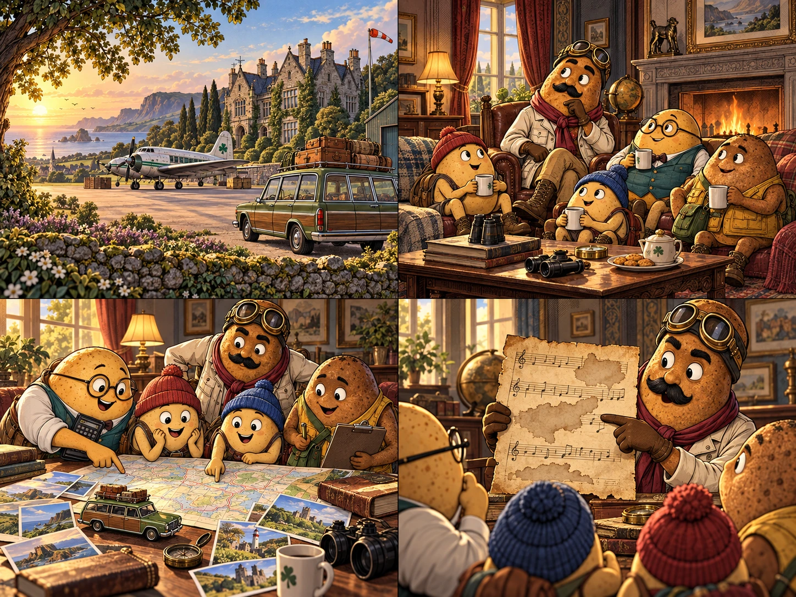
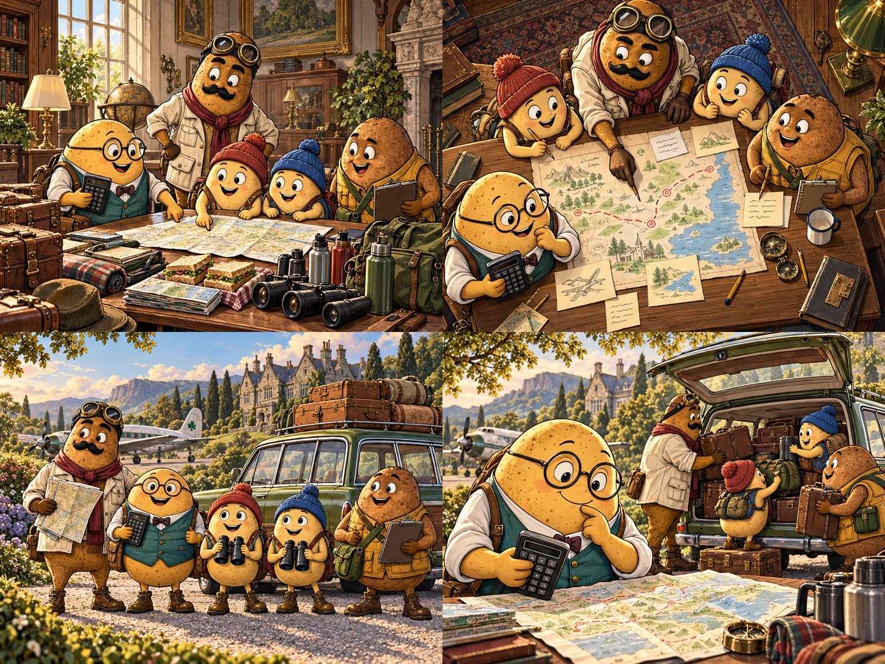
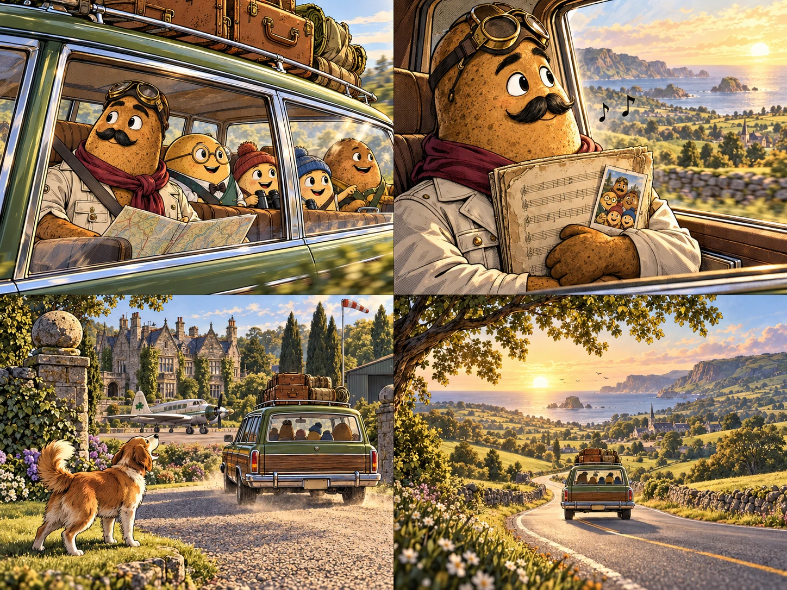

A New Mission for Sir Russet

The sun rose over the mansion in Spudville, casting long shadows across the airfield where the BRT-10-13 sat ready for action.
Sir Russet, still recovering from the intense Christmas encounter with the mysterious "Santa" pilot, sat with Tuberton, Mashy, Hashy, and Spudger.
They weren't scrambling to intercept unidentified aircraft this morning; instead, they were planning something far more ambitious: a ROAD TRIP!!!.
"We need to find the missing verses," Sir Russet declared, gesturing to a worn manuscript titled "Worm song". "Legend says they were lost somewhere between here and Ireland".
Preparation and Brainstorming

The crew knew that a journey of this magnitude required more than just fuel and snacks.
They gathered around the "Character Poem Brainstorming" document to ensure everyone was in the right headspace for the adventure ahead.
| Crew Member | Primary Role | Travel Goal |
|---|---|---|
| Sir Russet | Commander | Locate the "Worm song" lyrics |
| Tuberton | Navigator | Calculate the Range and M.A.D of their route |
| Mashy & Hashy | Reconnaissance | Scout for "dogs who love dogs" |
| Spudger | Logistics | Manage the Spudville Superdoc updates |
As they packed the car, Tuberton was busy with his calculator. "If we want to maintain our schedule, we have to find the Range and Mean Absolute Deviation of our daily travel distances," he muttered, referencing his latest math findings.
The Road Ahead

Their first stop was scheduled for Place, where they hoped to find a clue mentioned in the "Timmothy Stories". Sir Russet looked out the window, humming a melody. He remembered the last time they were all together, watching TV before the alarms blared.
"Happy Spud Year," he whispered to himself, echoing the sentiment he had sent in his last correspondence. The mission was clear: find the song, complete the poem, and make sure to capture every moment for the family back home.
As they pulled out of the driveway, a single dog barked in the distance—a reminder of the Boxing Day celebrations and the simple truth they all lived by: dogs love dogs.